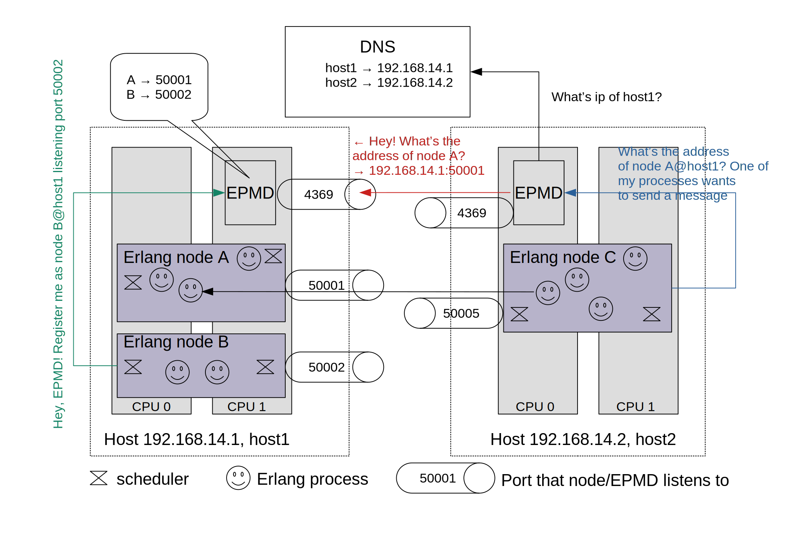

Preface
To my girls: wife, daughter, and mom - for their patience and love
Who should read this book?
To be honest, I don’t have vast practical experience of building distributed systems except the most popular one among web developers (hint: client-server). But a usual requirement to acquire this practical experience is some non-basic knowledge of the topic. So this is a classical “chicken-egg” problem: to work on a distributed software product you are usually required to have some related projects in your portfolio. So writing this book is a way to close these gaps.
Anyway I assume that readers have developed web projects and already have some experience in vertical and horizontal scaling, containerization, data races, classical algorithms and data structures. I will try at my best to introduce all used vocabulary.
I also do not devote any decent time for single machine patterns, as I believe you have enough working practice with them.
Why yet another book on distributed systems?
I’ve read some excellent books devoted to distributed systems or related topics. Among them:
- Mikito Takada Distributed systems: for fun and profit
- Brendan Burns Designing Distributed Systems
- Martin Kleppmann Designing Data-Intensive Applications
- Donne Martin System design primer
All above mentioned books have their own view on what topics and at what level should be covered. Martin Kleppman’s outstanding book (highly recommended) obviously focuses on data-related topics.
Despite I’ve read the books above, I had no clear mental picture and systematic view of Raft Algorithm, Lamport clocks and other distributed buzzwords. So this book tries to cover important topics (choice is subjective, of course) and to serve as a practical guide for busy engineers striving to grasp core concepts in a timely manner.
True understanding comes with real doing, so practice through exercises is a necessary part of learning. I have chosen Rust as a language to use throughout the book as I believe that Rust incorporates modern best practices and solid theoretical achievements. Experienced developers will dive without further ado. But for those who like more gradual involvement I could recommend the following excellent free resources to start with:
Why should we learn about distributed systems?
I admit that you already know the answer if you’ve started reading the book. But for the sake of completeness let’s enlist some points:
- modern scalable products inevitably rely on concepts discussed further. So if you want to get working experience in modern tech companies or even build your own product with highload and fault-tolerance in mind, you should grasp the basics1;
- expecting your software being distributed at some point in the future can radically improve your architecture decisions and even determine your preferred stack of technologies to use;
- emerging Web 3.0 is build around an idea of decentralization which is tightly connected with distributed. So at least you will be able to understand underlying technologies and explore them deeper.
The following goal for the book comes out of the points above - get reader familiar with selected topics on distributed systems with strong emphasis on practice.
Errata, typos, bugs and other feedback
I am not a native English speaker so I will be glad to get any feedback on a correct usage of English grammar and phrases. Also any suggestions, improvements, fixes are welcome. You can provide merge requests at book’s Github repository or email me at {auhtor’s name}.{author’s last name}@gmail.com.
Acknowledgments
I would like to tell many kind words to people who influenced me as a software engineer during my career. First of all, the friend of mine, Farit Sadykov, who helped me a lot to become a developer. Also my colleagues, especially Pavel Antonov, Nikolay Yurov, Vladimir Galkin, Pavel Gorbunov, Andrey Belov, Evgeny Orlov, Ilya Zhigalko, Slava Cheremushkin, Kirill Zhuravlev, Ilya Scherbakov.
Also many thanks to open source enthusiasts creating wonderful products, books, and articles, generously sharing knowledge with the rest of the world. We truly stand on the shoulders of giants.
Maksim Ryndin
Montenegro, 2022.
Being scalable doesn’t only mean software and infrastructure while adding more servers. It’s also about your team being ready to grow with growing traffic. So being prepared to go distributed is a must-have for every team member in terms of some introductory learning experience, automated pipelines and merge reviews etc. Please watch very informative presentation by Lisa Guo on scaling Instagram.
Introduction
The big idea is “messaging” <..> The key in making great and growable systems is much more to design how its modules communicate rather than what their internal properties and behaviors should be. Alan Kay, creator of Smalltalk1
What is distributed?
Distributed system is any system in which a number of independent interconnected computers can cooperate in order to achieve a common goal. Oxford Dictionary of Computer Science
If we have two virtual machines (VM) with a web server on the first VM and a database server on the second one, do we consider such a system distributed? If VMs are on the same physical node, is it a distributed system? If the web server and the database are running in separate containers and these containers are on different physical nodes, then this system is distributed. But a container orchestrator then moves both containers on the same node. Does the system of two connected containers lose its distributed flavor?
So there are many questions like above and for the purpose of the book we will follow the next definition of a distributed system.
Distributed system is a software which has at least two components interacting with each other only by a network.
If not otherwise specified, we will call components nodes and a group of connected nodes is named cluster.
Even if a network used for communication of the components for the present moment is a loopback interface (“localhost”), it can become a real network for the next deployment.
Why we need make our software distributed?
At least, to make it highly available at the cost of an increased complexity and managing effort.
Overview of the book
TODO
In this case we have a complete graph, so every node has connections with other n-1 nodes. That’s we have n*(n-1) edges but as we count every edge twice, total number of edges is n*(n-1)/2.
Unreliable network
Our definition of a distributed system mentions a network as a medium for communication. This medium is a very interesting and complex subject per se but here we only review some core concepts relevant to our study.
A network of interconnected computers is based on some physical layer (Ethernet cables or radio in case of wireless networks)1. The physical layer itself is subject to different disruptions, noisiness, and other problems. So we always have to assume that the network is unreliable and implement different retry, ordering, and healthcheck policies in our services.
Moreover, network capacity is limited and we should estimate ahead what an amount of data the system under development is going to send through the network.
Network throughput is an amount of data that can be transferred through a network within a certain time period Oxford Dictionary of the Internet (4 ed.).
We can measure a network throughput in bits per second (bit/s or bps) or even in data packets per a unit of time.
Stop&Think: How do you measure a network throughput? How do you estimate a maximum throughput (also called bandwidth or channel capacity) of a network?2
Congestion control algorithms https://cloud.google.com/blog/products/networking/tcp-bbr-congestion-control-comes-to-gcp-your-internet-just-got-faster https://git.kernel.org/pub/scm/linux/kernel/git/torvalds/linux.git/tree/net/ipv4/tcp_bbr.c
https://cacm.acm.org/magazines/2017/2/212428-bbr-congestion-based-congestion-control/fulltext
https://dl.acm.org/doi/10.1145/52324.52356
https://github.com/google/bbr
Typical interservice communication within a corporate network often causes to think that the communication is almost instanteneous. But in case of a world wide internet connection spanning several networks the time to deliver data significantly increases.
Network latency is the time taken for a given signal or data packet to propagate through a circuit or network from its source point to its destination Oxford Dictionary of Electronics and Electrical Engineering (5 ed.)
Network latency usually measured from source to destination and back constituting the so called round trip time (RTT) which is rougly speaking a double latency.3
Caching, keep-alive connections, geoghraphical proximity to the users are among usual options to decrease latency4.
Network partition happens if some nodes of a cluster in a distributed system cannot communicate due to a network failure but are supposed to.
Physically nodes (think, computers) in the network are connected by means of network interface controllers (NIC) - a special hardware allowing a computer to connect to the network via a cable (Ethernet) or a radio (WiFi). This physical layer is called a link in TCP/IP stack5. Nodes at the link layer are identified by Media Access Control Address (MAC)
So we have a network of nodes (also called LAN - local area network). How do we interconnect networks so that we can send a packet with data (called datagram) between two hosts from different networks? Here a routing problem arises. Computers called routers6 a relays between networks and are relaying datagrams from source to destination. But how do we distinguish a host in one network from a host from another network? We need some addressing at an internet layer. IPv4 addressing assigns each host an IP address of the form xx.xx.xx.xx . But with 2^32 unique IP addresses we cannot mark all hosts so IPv6 was developed. Anyway today we still use IPv4 and IPv4 address exaustion was mitigated by so called Network Address Translation (NAT) and private IPs. NAT - explore practically, p2p networks obstacles, violation of end-to-end principle, STUN, private network ips 10.xx.. and 192.168…., 172… Internet layer is independent of the network topology and physical way of hosts connection.
After we identified a route between to hosts, we can use a transport protocol to, at least, specify ports on hosts to connect specific application processes running on hosts involved. Because internet layer is only responsible for routing and for reliability of communication, transport layers protocols can also offer some reliability mechanisms like congestion control, preserves data ordering, eliminate packet loss, provides packet deduplication. Among
So we have a connection between to hosts and we can exchange
TCP/IP processing can also be done at NIC coupled with some user-space library offloading CPU and OS kernel. https://github.com/Xilinx-CNS/onload.
Network interface MTU NAT Subnet Network mask Broadcasting
So for a distributed system it is absolutely necessary to handle different network failures (which are quite common):
- meet bandwith requirements and handle network congestion on scaling;
- deal with increased latencies;
- have policies for network partitions: if a network partition creates two and more subclusters and such subclusters can behave independently (situation known as a split-brain7), how should the system evolve and finally merge conflicting states?
Most of us have heard about OSI model as a theoretical framework to discuss networking stack.
Also note that the maximum throughput is not actually an upper limit for application specific data throughput as there is always an overhead of a latency, protocols, encryption, compression, packet retransmission etc. A useful data throughput is sometimes called a goodput (see also Wikipedia Goodput).
An actual latency measurement is complicated by the presence of several nodes in the packet way, queuing (several packets from different sources to the same destination are put in a waiting list to send) on the gateway, processing delays. Tools like a famous ping can use special control protocols (such as ICMP) which differ from those protocols that you actually use for data (such as TCP) so measurements are biased.
Analyzing your application stack, CPU/IO profile can also help to choose an appropriate operating system if it is possible - see benchmarks Benchmarks: FreeBSD 13 vs. NetBSD 9.2 vs. OpenBSD 7 vs. DragonFlyBSD 6 vs. Linux
Note that common reference to TCP/IP stack (also called Internet protocol suite) includes not only Internet Protocol and Transmission Control Protocol (TCP) but also other protocols such as a User Datagram Protocol (UDP) and QUIC at a transport layer and Internet Protocol Security (IPSec) at an internet layer. TCP/IP stack as a practical network stack predates the OSI theoretical model for general networks. Since the adoption of TCP/IP in ARPANET in 1983 several proprietary implementations of the stack for different operating systems emerged. But the TCP/IP popularity increased when the University of California at Berkley had open sourced its implementation for BSD Unix BSD sockets?? (see Wikipedia Internet protocol suite).
Private IPs are defined to belong to the following subnets: 10.0.0.0/8, 172.16.0.0/12, 192.168.0.0/16. Number after the slash is the network prefix (CIDR notation) and denotes number of bits which is common for all hosts in the network. So, for example, 192.168.0.0/16 means that the first 16 bits are the same for all hosts and 192.168 in decimal and the rest 16 bits of total 32 bits define the host (2^16 possible addresses in the network). To be correct, the total number of possible addresses should be decreased by two as all binary zeroes hosts denotes the network itself, while all binary one host is the broadcast address. So when you encounter an ip 192.168.12.134, you already know that this ip is not reachable publicly (from the Internet), it is some internal private host.
For IPv6 private ip address (called unique local address starts with a prefix fd (8 bits), then 40 bits of global id (choosen randomly by the operator of the network), then 16 bits for a subnet and the rest 64 bits define the host. So with IPv6 local privates ips are essentially globally unique if 40 bits of global id indeed are random.
Routing protocol experienced revisions 1-4 until becoming well known IPv4
Do not confuse with network bridges. Routers allow spearate networks to communicate while bridges join networks making them a single network.
Create your own tool to measure network throughput
Here we will create our own Rust version of iperf3 to better understand concepts around network
https://github.com/esnet/iperf
Wireshark to analyze packets
Write our own DPI (nDPI, goodbyeDPI)
Availability
Availability in the common practice is understood as a metric rather than a property of the system. While in the theory of distributed systems (especially, CAP theorem1) it is more about property leading to confusion.
We will follow practical considerations and under availability will understand the following concepts.
A service level indicator (SLI) is a carefully defined quantitative measure of some aspect of the level of service that is being provided. It is a metric, not a target.2
For example, it can be a ratio of successfully handled requests.
A service level objective (SLO) specifies a target level for the reliability of your service. The SLO is a target value for an SLI.2
Service Level Agreement (SLA) declares your commitment to satisfy SLO. SLO also determines your error budget, i.e. duration of the allowed downtime within different time periods
Going distributed is just one of the ways to strengthen availability via adding scalabity and redundancy.
Clever design (including API), code quality assurance, proper algorithms, performance tuning, application monitoring, best DevSecOps practices, business and tech metrics collection significantly improves availability and should be considered first before introducing complexity of a distribution.
Martin Kleppmann A Critique of the CAP Theorem
Google Cloud Architecture Framework Reliability principles
Distributed vs Decentralized
Decentralized network is a dispersed network having several or multiple large hubs <..> and no dominant central hub. Oxford Dictionary of Media and Communication
Consider master-slave replication of database. We have some slave databases running only read requests and a master database server executing read and writes queries and replicating all changes to slaves. Clearly this system is distributed due to the replication link. If we had no mechanism of promoting slave to master in case of the master’s failure, then our system is not decentralized.
So decentralization insreases fault-tolerance removing single point of failure. But there is also a catch. Consider two network topologies: Mesh (in case of full decentralization) and Star (with central master).

So in the case of n nodes of mesh network topology we have n*(n-1)/2 connections1 while in the case of the star network we have only n-1 connections. So heavily meshed distributed systems produce increasing network contention.
Taste of distributed
Exercises
-
Due to growing traffic we decided to shard users data by a starting letter of last name. Can we consider such a sharded database as a distributed system? Explain your answer.
-
Model packet loss in the network
-
Implement exponential backoff algorithm
Established systems
Successful software is composed not built. Roger Johansson, creator of ProtoActor
Implementing distributed systems right way is hard. In most cases we can compose our software within well established distributed systems. Of course, the goal of the book is to learn how to implement such systems from scratch. But we should be familiar with other options. Some are listed below in the order of decreasing technology lock-in.
Battle-tested Erlang/OTP
Any sufficiently complicated concurrent program in another language contains an ad hoc informally-specified bug-ridden slow implementation of half of Erlang. Robert Virding, one of the creators of Erlang
Erlang still remains to be a unique fusion of practical engineering and clever architectural vision. Created in 1980s, it still has such a great potential to evolve in a modern web12.
We won’t dive in the language per se and pragmatic ideas of “let it fail”, supervision trees, and fault tolerance. You can read the very concise and full of practical wisdom thesis (highly recommended) of Joe Armstrong, one of the Erlang creators.
Let’s focus more on Erlang distribution capabilities. Erlang is compiled to run in a virtual machine called BEAM3. Elixir is also a BEAM-runnable language with interoperability with Erlang.
Erlang lightweight processes, while executing application logic, communicate with each other using signals. Most used signal type is a message4. Processes are scheduled for execution by BEAM. You can run millions of processes5. OTP is a collection of reusable components (abstractions for concurrent and distributed patterns such as client-server). So Erlang/OTP is a framework allowing you to quickly create complex concurrent and distributed systems.
BEAM (written in C) can be extended with dynamically loaded compiled modules with Native Implemented Functions (NIFs). So you can write this shared module in a language you prefer (supporting C interoperability, of course)6.
Erlang is primarily well suited for a massive IO-bound load so for CPU-bound tasks you should use, for example, above mentioned NIFs7.
Every node (Erlang VM) to form a cluster should share the same cookie file with a secret. It is rather a basic “security” with the aim to differentiate two or more clusters.
Every Erlang VM is started with a predefined name and then it’s enough to register the rest n-1 nodes on the first node. All nodes sharing the same cookie will propagate connections to each other creating a fully connected mesh network. This default transitive connection propagation can be configured – a node called hidden node without transitive connections can be used to create clusters with less connections8.
By default, communication between nodes of a cluster is done over TCP. Separate daemon process (called EPMD - Erlang Port Mapper Daemon) starts (if not already running) on every host machine with Erlang VMs. EPMD uses DNS to resolve node names to ip addresses and maps node names to ip+port (tcp socket). EPMD serves as a name resolver for nodes on the host machine.

You can also implement your own procedures for nodes discovery and discovery under container orchestrator.
Default Erlang distribution with cookies assumes trusted network so you should change default communication mechanism in case of untrusted network9. Moreover, large number of nodes with fully connected mesh communicating over large and uncontrolled network can be prohibitatively costly. This break point may range from 40 to 140 nodes10 depending on load and amount of global state required to sync over cluster (such as a process namespace or getting now time which requires global lock to provide monotonically increasing time over the cluster). In such cases federated11 clusters and partitioning of global state in separate groups of nodes inside a cluster is a way to go12.
Erlang is actively modernized and continuosly developed. So it’s a solid foundation for a distributed system.
Erlang lessons to go distributed:
- separation of concerns and modularity - you can configure your communication transport, algorithm of node discovery, network topology;
- distributed system must be observable (Erlang has excellent tracing and monitoring tools allowing to observe even specific Erlang processes);
- communication is asynchronous so no node has to wait any acknowledgement that its message was received by another one;
- message passing is location transparent (the code to send message to local Erlang process is the same as for sending to a process on another node in the cluster – at a cost of more RAM and time to
memcpyas every message is deeply copied); - maintaining global mutable data (namespace of lightweight processes in case of Erlang) and full connectivity severely limits scalability.
For example, Swedish fintech Klarna uses Erlang as it’s core platform handling 2 million transactions per day - look at their job descriptions.
At one of my work places I almost convinced my CTO to write IO-bound service for proxying media streams and unary requests in Erlang. For two weeks I read everything on Erlang and finally presented a workable version which was deployed to production. It had worked under production for about 3 weeks till the CTO had a look at the code. He was rather afraid of completely non-imperative style of code and inability to scale his Erlang team (consisted of only me). So he gently asked me to rewrite the app in Go. For those brave of you Adopting Erlang.
Alternative execution environments (including not only VMs) emerge periodically but I haven’t heard about any production-ready. BEAM is really complicated to reinvent. See also Lumen.
A lot of holy wars around considering Erlang as an actor language. See Stack Exchange question and Robert Virding’s email.
See Rustler
See also epmdless, Using TLS for Erlang Distribution
Federation is a technique to scale software by grouping its parts by feature. For example, you can federate database in separate servers: one for sessions, second for users, third for sales etc. Increased throughput comes with cost of joining data and holding transactions on the application side.
See Scaling Reliably: Improving the Scalability of the Erlang Distributed Actor Platform, Scaling Erlang Cluster to 10,000 Nodes, Stackoverflow question
Martin Kleppman Critique CAP
latency-sensitivity framework
availability as a metric
operational and network latency
algorithm sensitivity to latency
Network partitions can be modelled as large packet delays (up to the duration of the partition), provided that the duration of the partition is finite and lost packets are retransmitted an unbounded number of times1.
Martin Kleppmann A Critique of the CAP Theorem
ML training
Machine learning involves many matrix operations and is naturally parallelized not only within single node but also over distributed nodes. Out-of-box solutions like Distributed training with TensorFlow transfer parameters (aka weights) from parameters nodes to worker nodes and back during model training. But large parameters matrices for sparse data heavily consume network bandwith and severely decrease model training speed1.
Sparse data means having many null values. For example, unpacked data batch X looks like
[[0, 0, .., 0, 9],
[5,0, .., 0, 34],
...
[0, .., 720, 14]]
where total number of rows is a batch size m and each features row is about 2^20 values (yes, it’s a Twitter’s scale).
So the first layer of the network requires 2^20 rows in its parameters matrix W consisting of float32 numbers (4 bytes each) and it’s number of columns depends on the next layer size, typically 50 - 400 in case of Twitter. So this results in first layer matrices of
50 * 2^20 * (4*2^-20) Mb = 200 Mb to 400 * 2^20 * (4*2^-20) Mb = 1600 Mb. When you have a lot of worker nodes exhanging gigabyte of data each with parameters servers, your network bandwith is in danger. While first layer is huge, other layers are considerably smaller.
Twitter approaches this scalability problem with a clever nodes organization2.
Assume we have K worker nodes, P parameters nodes, and n features in a dataset row.
Then if we break the weights matrix of the first (sparse) layer in P submatrices by features (by columns):
X * W = X1 * W1 + .. + XP * WP
then each worker node should only work with block of input Xi and block of weights matrix Wi.
Each parameters server i is responsible for ith partition Wi of the sparse first layer.
Each worker node runs two processes with the following pseudocode:
Data unpacking and partitioning:
const m // batch size
const P // number of partitions of the sparse layer
fn process_input() {
loop {
batch = receive_input_batch(m) // batch of size m
for i in 0..P {
submatrix = unpack_submatrix_i_of_features(batch, i) // with m rows and n/P columns
send_this_submatrix_to_parameters_server(submatrix, i) // send to server i
}
}
}
Reconstructing output layer of the first sparse layer and training rest layers:
const P // number of partitions of the sparse layer
fn train_rest_of_layers() {
loop {
output_layer // product XW of size m rows (batch size) and n columns (number of features)
for i in 0..P {
output_layer += receive_output_submatrix_from_parameters_server(i) // product of block of X and block of W from parameters server i
}
calculate_other_layers_of_network(output_layer)
}
}
Because the second and further layers are much smaller than the first “sparse” layer, each worker node has these layers locally.
Each parameters node i runs the following process:
const node_number = i
const K // number of workers
fn train_first_layer() {
loop {
Wi // block i of weights matrix for the first sparse layer
Xi = receive_submatrix_of_features(i)
block_i = calculate_block_product(Xi, Wi)
for j in 0..K {
send_output_layer_block_to_worker(block_i, j) // send to worker j
}
}
}

Such a cluster organization allows for failure and restart of a worker node without loss of weights of the first layer (failure of a parameters node is more damaging). Each worker node is stateless and no transfer of a huge sparse matrix W occurs over network3.
Blockchain
Permissioned vs permisionless
TPS (transactions per second)
Blockchain network (also called cluster) is p2p network of nodes (called validators in Solana) exchanging with a copy of a ledger (blockchain). Typically 10 - 50 validators totaling 1000-2000 nodes1
- distributed state transition requires consensus
Smart contracts are run on VM (Sealevel for Solana, EVM for Ethereum)
Client is a program communicating with a cluster via transactions (composed of several intructions in terms of solana).
Transactions are signed by the client by means of Public Key cryptography.
dApp -decentralized app is a UI (typically writen in some Javascript flavor) client
Node which appends new transaction to the ledger is an elected leader.
Token is a unit of payments for computing resources of the cluster (running smart contract or validating its output). You can invest some tokens (delegate a stake) into validator gain a reward. Validator takes some fee (commission) for their services (in bitcoin by including a transaction with 25 BTC out of nowhere2. Growing validators can offer lower commission. It favors large validators to become even larger because lower fee insentives investors to delegate their stakes at a lower commission3.
If validator behaves maliciously, you los e your delegated tokens and also validator loses its delegated power and cannot earn more or even as before.
You can use a wallet which is a client allowing you to operate on your token account (send and receive). To make stakes usually separate stake accounts are used. Solana: Tokens on the stake account can only be invested in the one validator the whole amount at one time. To invest to several validators simultaneously you should use several stake accounts.
How do you get your initial tokens to start? Crypto exchanges (like Binance) allow you to buy some tokens in exchange for a usual currency like US dollars.
Account is typically identified by public key.
Validators advertised their public key.
Bitcoin core can be used to build dApps
- with bitcoin scripting
- with some metaprotocols requiring to use trusted nodes Or you should invent your own blockchain
Buterin suggested EVM to
See, for example, Solana’s validators market shares and commissions https://solanabeach.io/validators
(https://ethereum.org/en/whitepaper/)
Here are the list of references to cool articles and books etc I’ve used to prepare this book.
- Mikito Takada Distributed systems: for fun and profit
- Brendan Burns Designing Distributed Systems
- Martin Kleppmann Designing Data-Intensive Applications
- Wikipedia Web 3.0
- Easy Rust
- Rust by example
- System design primer
- Lisa Guo on scaling Instagram
- Re: prototypes vs classes was: Re: Sun’s HotSpot
- Martin Kleppmann A Critique of the CAP Theorem
- Martin Logan, Eric Merritt, and Richard Carlsson Erlang and OTP in Action
- https://github.com/tsloughter/epmdless
- https://contactchanaka.medium.com/erlang-cluster-peer-discovery-on-kubernetes-aa2ed15663f9
- Joe Armstrong Making reliable distributed systems in the presence of software errors
- https://www.erlang.org
- https://stackoverflow.com/questions/43173196/what-is-the-maximum-practical-number-of-nodes-in-an-erlang-system
- https://stackoverflow.com/questions/5044574/how-scalable-is-distributed-erlang
- Why we used Pony to write Wallaroo
- Adopting Erlang
- BEAM book
- https://stackoverflow.com/questions/32846615/what-is-the-best-way-of-doing-computationally-intensive-tasks-in-erlang-w-o-scal
- Timmo Verlaan No(de) discovery without DNS & EPMD - Code BEAM STO
- Robert on anything
- Phil Trinder et al Scaling Reliably: Improving the Scalability of the Erlang Distributed Actor Platform
- Scaling Erlang Cluster to 10,000 Nodes
- https://softwareengineering.stackexchange.com/questions/277464/is-erlang-really-an-actor-model-language
- Fallacies of distributed computing
- Fred Hebert Lessons Learned while Working on Large-Scale Server Software
- Distributed training with TensorFlow
- Distributed training of sparse ML models — Part 1: Network bottlenecks
- Distributed training of sparse ML models — Part 2: Optimized strategies
- Distributed training of sparse ML models — Part 3: Observed speedups
- What is blockchain technology?
- Mario Zupan How to build a blockchain in Rust
- Pascal Akunne A guide to blockchain consensus protocols
- Ethereum
- Satoshi Nakamoto Bitcoin: A Peer-to-Peer Electronic Cash System
- Chase Barker Getting Started with Solana Development
- Solana Core Concepts (Community Video)
- Solana Docs
- https://chorus.one/networks/solana/
- Felix Lutsch The Basics of Staking
- Satoshi Nakamoto Bitcoin: A Peer-to-Peer Electronic Cash System
- The Launch of Chorus Ventures
- Nick Szabo The Idea of Smart Contracts
- Eddie Xie, Yuanjun Yang How we built Twitter’s highly reliable ads pacing service
- Взлетит или нет — две разные точки зрения на Web3
- etcd
- Etcd official website
- Wikipedia Network throughput
- Wikipedia Network congestion
- Wikipedia Goodput
- Wikipedia Measuring network throughput
- Wikipedia Latency (engineering)
- Wikipedia Network bridge
- Wikipedia Network delay
- Alex Diaconu Navigating the 8 fallacies of distributed computing
- Kubernetes: Why Use It, How It Works, Options and Alternatives
- Kubernetes Nodes: Components and Basic Operations
- Clustering and Network Partitions
- Martin Kleppmann A Critique of the CAP Theorem
- Benchmarks: FreeBSD 13 vs. NetBSD 9.2 vs. OpenBSD 7 vs. DragonFlyBSD 6 vs. Linux
- Urbit
- Ethereum Whitepaper
- Urbit for Normies
- Confidential Computing: Hardware-Based Trusted Execution for Applications and Data
- A Technical Analysis of Confidential Computing v1.2
- Brian “Beej Jorgensen” Hall Beej’s Guide to Network Programming
- Wikipedia Network interface controller
- Wikipedia Internet protocol suite
- Wikipedia Routing protocol
- Wikipedia IPsec
- Wikipedia Network address translation
- Wikipedia Private network
- RFC 1918 Address Allocation for Private Internets
- Wikipedia Classless Inter-Domain Routing
- Wikipedia Subnetwork
- Wikipedia Unique local address
- RFC 4193 Unique Local IPv6 Unicast Addresses
- Wikipedia UDP hole punching
- Wikipedia TCP hole punching
- Wikipedia
https://blog.twitter.com/engineering/en_us/topics/insights/2021/simple-scalable-graph-neural-networks https://blog.twitter.com/engineering/en_us/topics/insights/2021/fusing-elasticsearch-with-neural-networks-to-identify-data https://blog.twitter.com/engineering/en_us/topics/infrastructure/2021/processing-billions-of-events-in-real-time-at-twitter- https://blog.twitter.com/engineering/en_us/topics/insights/2021/graph-neural-networks-through-the-lens-of-differential-geometry- https://blog.twitter.com/engineering/en_us/topics/insights/2022/graph-machine-learning-with-missing-node-features
https://blog.twitter.com/engineering/en_us/topics/open-source/2020/hunting-a-linux-kernel-bug
https://ethereum.org/en/developers/docs/evm/ https://ethereum.github.io/yellowpaper/paper.pdf https://ethereum.org/en/developers/docs/ https://docs.soliditylang.org/en/v0.6.0/introduction-to-smart-contracts.html#the-ethereum-virtual-machine
https://habr.com/ru/company/yandex/blog/564510/
https://robertgreiner.com/cap-theorem-revisited/